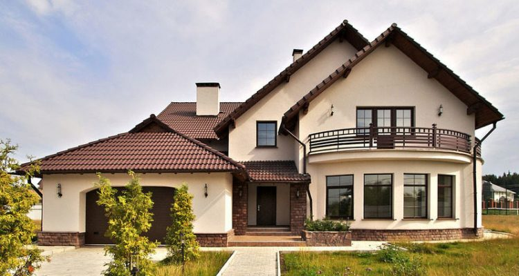

Эксперты: "Хапун" на исходе, рост цен на недвижимость себя исчерпал

Средняя цена столичных квартир в реальных сделках купли−продажи выросла
в апреле на 2,2% и составила 1266 долларов за квадратный метр: за четыре
месяца «квадрат» подорожал в среднем на 100 долларов. Но эксперты говорят:
«хапун» на исходе, рост цен себя исчерпал.
Цена на нефть марки Brent продолжает расти
Цена на нефть североморской марки Brent достигла наивысшей отметки с
ноября 2014 года. В ходе торгов на лондонской бирже ICE в четверг,
17 мая, стоимость фьючерсов на июль превысила отметку в 80 долларов
США за баррель и составила 80,18 доллара. В течение дня этот
показатель опустился чуть ниже этой психологически важной отметки —
до 79,92 доллара, что на 80 центов выше показателя предыдущего дня.
"Горизонт" выпустит 8K-телевизор
Телеканал «ОНТ» в сюжете о визите Александра Лукашенко в
Таджикистан упомянул об одной из последних разработок белорусского
холдинга «Горизонт» — телевизоре с разрешением экрана 8K
(7680 на 4320 пикселей).
Сезон выгод в Volkswagen! Минус 1500 р. на Polo и 3000 р. на Jetta!
Volkswagen Polo – это надежный автомобиль, обладающий оптимальной вместимостью багажника (объем 460 л.),
отличным экономичным мотором (расход топлива от 4,5 л/100 км) и хорошей проходимостью
(дорожный просвет 17 см) на различных участках дорог.
Выберите Ваш Volkswagen Polo прямо сейчас! Уже в базовую комплектацию Polo входят:
Кондиционер
Центральный замок
Электрические стеклоподъемники
Кнопка открывания багажника снаружи и многие другие полезные опции.
Только в мае действуют специальные условия на покупку ограниченного склада
Polo Comfortline, Highline и Life! Выгода до 1 500 рублей! Не упустите сниженные цены на
ходовые комплектации!